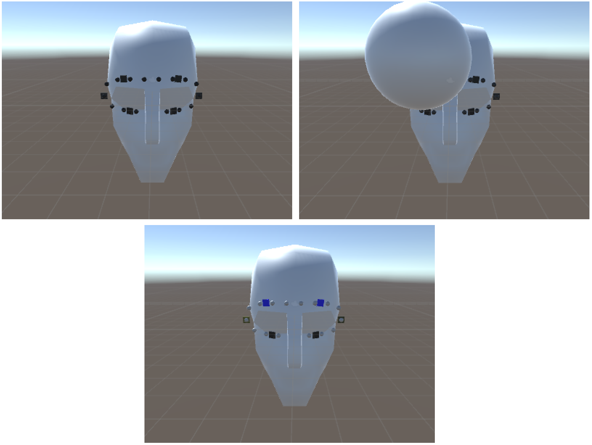

ImmerVR
Leo Hnatek
Final Presentation
Actuating the Facial Contact Area
of a Head-Mounted Display
for Increased Immersion


VR devices today use auditory, visual and haptic stimuli

Set a zero value to two modules that are in direct mode
{"modules":[{"id":0,"values":[0,0,0,0]},{"id":2,"values":[0,0]}]}
Set module with id 1 into heartbeat mode, an intensity of 50% and interval of 80ms between beats
{"id": 1, "mode": "heartbeat", "intensity": 50, "interval": 80 }

Object with physical attributes mass, temperature, charge.
It creates cooling, vibration and EMS actuations.
Part one: increasing sensation with two actuator types
Part two: increasing the resolution of one actuator type with the help of another

Connector of modules, with power lines and data lines
Physical Device
Virtual environment in their study setup.
Electric Muscle Stimulation on arms creating sensations
Goal: Make objects tangible, i.e., objects can be felt on touch or when they create sensation indirectly
| Actuator | Collision | Ambient |
|---|---|---|
| Vibration | Mechanical Impulse | Gravity |
| Temperature | Thermal Conduction | Thermal Radiation |
| EMS | Electric Charge | Electrical Field |
Depending on what the object represents, attributes can be assigned and it can be declared an ambient object